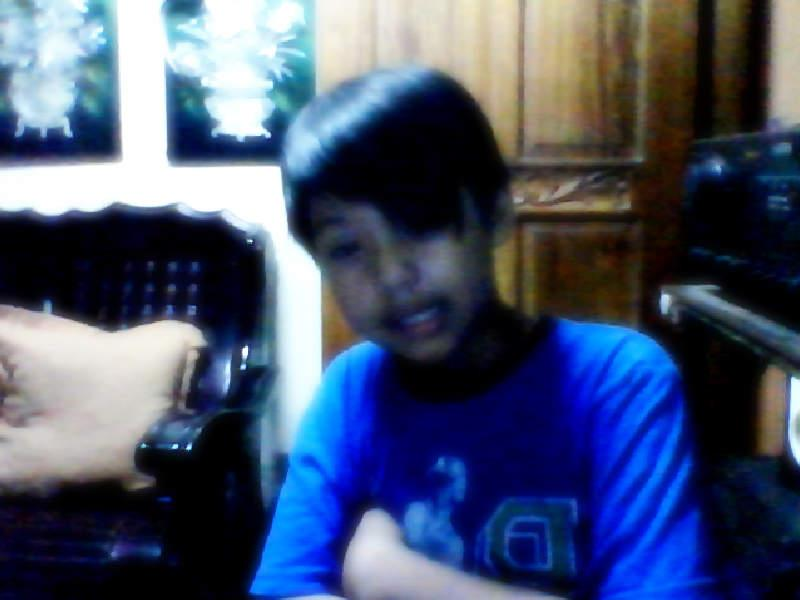
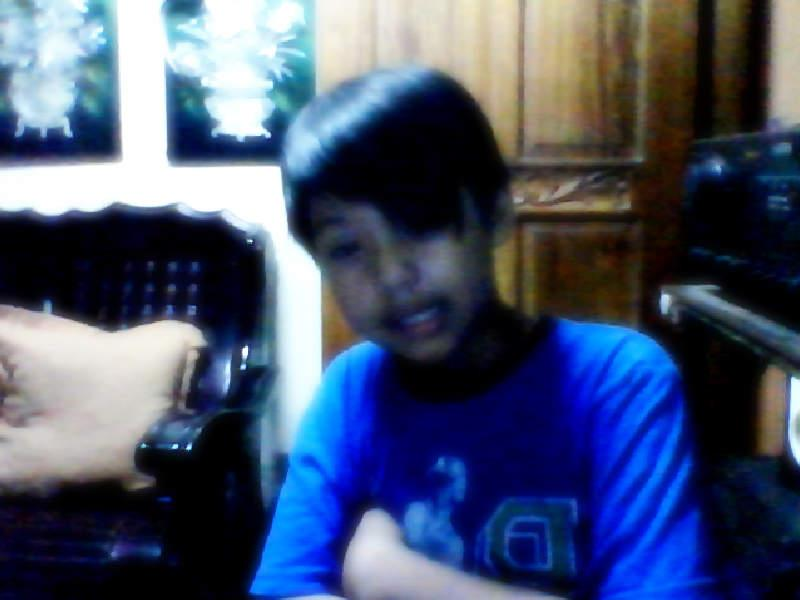
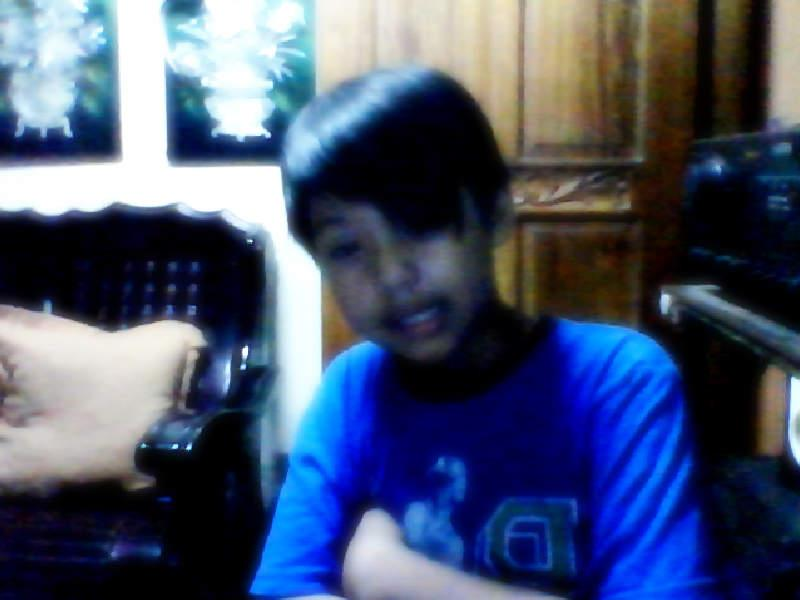

This page contains most of all the story i've been through. I hope you enjoy reading my stories, this will be our little secret *_^
I grew up with my aunties taking care of me because my parents went to overseas and work for our family.(1) when i was a kid i only knew them by their voices because i was too young when they both went to vietnam.(2) the first time i saw them was in yahoo messenger we video called and i cried because i miss them and i barely even knew them.(3) i was such an outgoing child back then i also go out whenever i'm allowed sometime i can't go out because my auntie told me that if i didn't sleep in the afternoon i'm not allowed play outside.(4)since i was young i was hooked up in basketball.(5) my brothers and father taught me how to play and since then i'm always in the basketball court playing even if its hot and sunny.(6) i also love biking, when i six years old my father is the one who taught me how to ride a bicycle at first i was stumbling all over the place but after practicing i got used to it and i learned how to ride it properly.(7)since then im always on my bike going somewhere.(8) as soon as i woke up its just two things that i do either biking or playing basketball.(9) my childhood is amazing for me because i did what most child dreamt of doing like camping, swimming even picnic with friends.(10) i remember when i was a kid whenever my birthday comes my mother i wll go home and we always go to resorts i even invited some of my friend to celebrate.(11) it's always a bfast because i celebrated my birthday with my love ones and with friends.(12) when i was a kid i really hate going to school because i just want to play all day and sometimes my auntie gets mad at me because im not waking up to go to school.(13) i was an very active type of kid so i don't really like going to school i would prefer playing than going to school.(14) but when i got used to my new school i really opened up to my new classmates and we always do something together at school they even taught me how to play a guitar.(15) and i thought that being in school is also amazing learning and playing at the same time.(16) that changes my mind on going to school.(17) my auntie was shock that i woke up early by myself and i even prepared my own clothes for my school.(18) and that's how i enjoyed my chiildhood years.(19)that's all thank you.(20)
Go Top
In my teenage just like in childhood im either playing basketball or riding my bike going somewhere.(1) i really like playing i even got on a team though at first im not that good.(2)My coach told me eventually im gonna play better than i ever did(3) after weeks of training with my team i got better playing and even play at tournament even though it's just in our subdivision.(4) When i was a highschool student i always go with my friends going somewhere we want to spend time like coffee shops, parks, and malls.(5) Mostly that's how i spend my days, either im at basketball court playing or spending time with friends.(6) during my Shs years i went to different school compare to my friends in highschool.(7) in my new school i don't have any friends at first so im scared to socialize.(8) after days on new campus i somehow got used and accustomed to new system in school.(9)I even got a new circle of friends and we share the kind of hobbies like hanging out(10) it was more amazing than my previous school because my friends and i love the same things(11)We even goes to the gym to play basketball before our classes.(12) and after class we would to a coffee shop that let us play some board games.(13) We would stay there until past 8pm or one of my friend's mom texted them.(14) even though we hang out a lot we're not neglecting our studies they were a such a good influence to me.(15) they even helped me when my groupmates doesn't help me.(16) i am very glad i met them and got close to them.(17) We planned on getting together after 5 years, after we finished college like an reunion.(18) we even dreamt of what we would be in the near future.(19) that sums up my teenage years.(20)
Go Top
College life was very exciting experience for me because it is the time i had to focus on my studies even more so that i can accomplish my dreams.(1) however it's different if you have friends that will invite you to somethings.(2) well it's not like they are bad influence to me instead they're just pointing out that i don't have to stress myself and enjoy my college life.(3) and in that case i really enjoyed my freshman year in UE.(4) in the first week of school year my classmates and i celebrated our first year in college by drinking alcohol and having a good time.(5) we did many things to enjoy like playing online games before going home or eating together during lunch.(6) but now it is hard to get acquainted to new people because of pandemic.(7) many of my batchmates continued they're studies during pandemic while i stopped for one whole school year because i feel like i'm not still ready for the online classes.(8) but now i had to get used to it because i got no choice.(9) my mom told that if im still gonna wait for the face to face class i would waste another school year.(10) so now im currently a 2nd year student.(11) at first online classes is quite hard for me because i'm a slow learner and it is hard to interact with teachers if you have questions unlike when it was face to face you can just raise your hand and aks that question.(11) after some time i got used to it but for me if i would have to choose f2f or online class, i would still choose f2f because i can really feel i am college student.(12) unlike in online classes you just have to sit in front of your laptop/desktop and you don't even have to wear your uniform.(13) also you can't do hands-on activity in online classes for example as an it student you have to know how to build and disassemble the computer, it is hard on your own you have to be guided by someone who is knowledgeable in those area like professors.(14) but they can't teach that now because of pandemic.(15) we can't harness or practice our skill now due to pandemic but i hope when im in third year i can experience face to face classes again.(16) that's the downside part of online classes for me.(17)i really miss going around in campus and going to class together with friends.(18) also going on places that i've never been before.(19) that's sum up my college life.(20)
Go Top